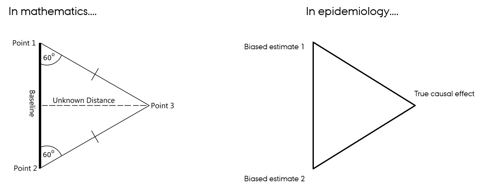

In aetiological epidemiology, we are interested in estimating a causal effect of an exposure on an outcome. However, when we use observational data to estimate a causal effect, our estimate may be impacted by different types of bias: confounding bias, misclassification bias, selection bias etc. This will then imply that we obtain a biased estimate of the true causal effect that we are interested in.
So what do we do?
Either, we try to justify that our estimate of the causal effect is not impacted by the mentioned types of bias, or, we try to account for how much and in which direction we believe our estimate is biased. In that way, we try to make a qualified guess about what we believe the true causal effect is. The triangulation approach is a way to formalize this process.
In high school, we have learned that we can use the Pythagorean Theorem to calculate a distance when we know two other distances. Triangulation in epidemiologic research is similar to this approach. We know the values of some potential biased estimates and we will use these estimates to say something about the true causal effect. What is not similar to the mathematical way of using triangulation is that triangulation in epidemiology is not about using a formula. The idea of triangulation is to formalize how we can integrate potential biased estimates to address a causal question.

Definition
The formal definition of triangulation is this:
The practice of strengthening causal inferences by integrating results from several different approaches, where each approach has different (and assumed to be largely unrelated) key sources of potential bias.
Criteria
There are some specific formulated criteria for triangulation. These are:
Results from at least two, but ideally more, different approaches, with differing and unrelated key sources of potential biases, are compared.
The different approaches address the same underlying causal question.
Related to the above criterion, for each approach the duration and timing of exposure that it assesses is taken into account when comparing results.
For each approach the key sources of bias are explicitly acknowledged when comparing results.
For each approach the expected direction of all key sources of potential bias are made explicit where this is feasible, and ideally within the set of approaches being compared there are approaches with potential biases that are in opposite directions.
I would like to make two comments to some of the formulations in the criteria.
Comment #1
First, what is meant by “different approaches, with unrelated key sources of potential biases”?
Sources of bias means the process through which specific biases might occur. For instance, using different comparator groups and alternative definitions of exposure, all have different sources of bias. Different comparator groups have different confounding structures and alternative definitions of exposure may have different sources of bias from misclassification. These approaches may be a part of a proper triangulation. However, different statistical methods do NOT have different sources of bias because they will all have bias from the same unmeasured confounders. So for instance using multivariable regression, stratification, propensity scores cannot be a part of a proper triangulation.
Comment #2
Another comment is to the formulation “direction of bias”.
In some situations, bias results in an attenuated estimate of the causal effect. This means that we under-estimate the true effect. This can happen for instance under non-differential misclassification. In other situations, bias results in an increased estimate of the causal effect. This means that we over-estimate the true effect. This can happen for instance by confounding (but please be aware that confounding also can cause under-estimation of the true effect). In triangulation, it is ideal, that the approaches have potential biases in opposite directions. However, it is not required that they have this. What is important is that it is made explicit, in which direction the biases are.
Example
I would like to show you an example of triangulation. In my study, we aim to assess the effect of prenatal exposure to antidepressants on the risk of ADHD in childhood. A big problem in this study is confounding from unmeasured factors (indication, genetic, and environmental factors). So, we decided to use three different designs, to address confounding from different sources of bias.
Former user design: the cohort consisted of children to formerly antidepressant-exposed mothers. This design reduces confounding by indication (maternal depression) since both children with and without prenatal antidepressant exposure have mothers who were exposed to antidepressants before pregnancy, signifying an underlying maternal depression.
Active comparator design: children of mothers exposed to mental health counselling but not to antidepressants was compared to children with prenatal antidepressant exposure. This design reduces confounding due to depression disease activity, as both children with and without prenatal antidepressant exposure are exposed to maternal depression during pregnancy. Mental health counselling during pregnancy was defined by a record of therapy by a general practitioner, a referral to therapy with a psychologist, or a referral to treatment by a psychiatrist during pregnancy.
Sibling design: the design explores compares siblings with and without prenatal antidepressant exposure. The subcohort included all children of mothers with at least two discordantly exposed siblings. This comparison removes confounding by shared genetic and environmental factors.
In addition, we also did some sensitivity analyses including negative control analysis (paternal exposure) to evaluate the amount of residual confounding and alternative definitions of exposure and outcome to evaluate the amount of misclassification.
These designs all have unrelated key sources of potential biases, so by triangulating the results from the different designs, we can get an estimate that is closer to the true causal effect.
Summary
Triangulation is a tool to strengthening causal inferences. The basic idea is to compare different approaches.
References
Thank you for reading!
We live in a world with huge information-flow and with new knowledge constantly introduced to the scientific community. Sometimes all these new information can be overwhelming and difficult to gasp - especially if you are new in the field. However, knowledge can be shared on several levels of complexity. We need to focus on appropriate and new ways to disseminate the knowledge that we gain, so that our research and finding reach a broader audience. With these entries I aim to provide knowledge sharing in an simple and introducing manner. The entries serve to introduce and discuss topics, concepts and exciting papers from the field of biostatistics and epidemiology and give the reader a base and an interest to further investigate the subjects. Whether you are from the field of biostatistics and epidemiology or just a curious reader, I hope that these entries will help you understand the basic concepts and the research that the we do in this field.
Thank you for reading!